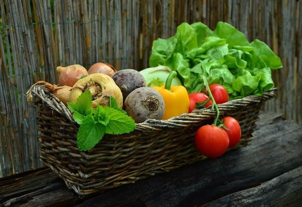

Conectando Vidas entre o Rural e o Urbano
Do Campo à Mesa: A Jornada Dos Alimentos
A maioria dos alimentos que consumimos todos os dias percorre um longo caminho até chegar à nossa mesa. Esse processo envolve várias etapas, desde o plantio até a comercialização, e é essencial para garantir que os alimentos cheguem frescos, seguros e nutritivos para o consumidor final.
Tudo começa com os agricultores, que cultivam os alimentos nas lavouras ou criam animais nas fazendas. Eles preparam o solo, semeiam as sementes, cuidam do crescimento das plantas e dos animais, e colhem os produtos no momento certo. Esse trabalho exige conhecimento, dedicação e o uso de técnicas agrícolas adequadas para garantir uma boa produção.
Depois de colhidos, muitos alimentos passam por um processo de limpeza, seleção e, em alguns casos, transformação. Por exemplo, o trigo é moído para virar farinha, e o leite pode ser pasteurizado e transformado em queijo ou iogurte. Esse processo é chamado de beneficiamento ou industrialização e é feito para melhorar a qualidade, conservar por mais tempo e facilitar o consumo.
Os alimentos são então transportados das fazendas ou indústrias até os centros de distribuição, supermercados, feiras e outros pontos de venda. Para isso, é necessário um sistema logístico eficiente, com caminhões refrigerados, estradas em boas condições e armazenamento adequado, especialmente no caso de produtos perecíveis.
Por fim, os alimentos chegam à mesa das pessoas, onde são preparados e consumidos. Essa é a última etapa da jornada, e envolve escolhas conscientes por parte dos consumidores, como preferir alimentos frescos, dar preferência a produtores locais e evitar o desperdício.